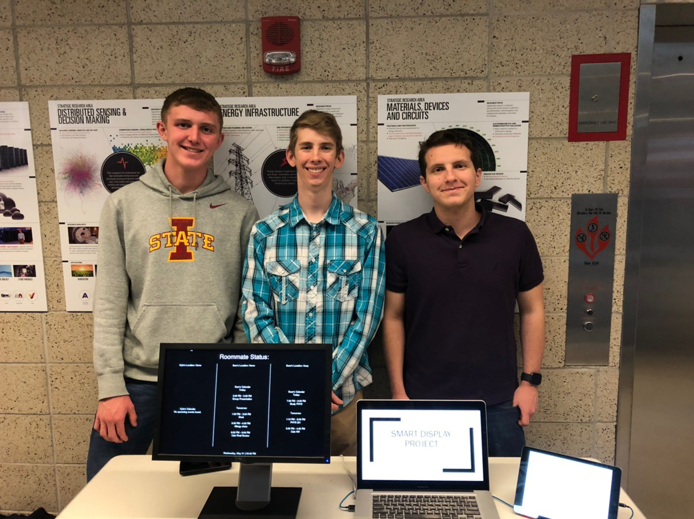

Summary
Description
This project was to build a smart display that would show information at a glance to the user. It was targeted towards ISU college students, and included helpful information such as CyRide prediction times for the nearest bus stop, weather information for the day, and roommate status.
My Role in the Project
In general, I was the project lead, since the project was my idea. When working on the project however, we split it up into the three main parts: the CyRide screen, the weather screen, and the Google Calendar/roomate screen. This worked out well since there were three of us and three screens to work on. I worked on the CyRide screen.
Skills/Knowledge Gained
- Objective Python
- Python packages
- TkInter
- XML and ElementTree
- Git
- MyRide API
Resources Used
Imagine that you're me, getting ready in the morning for classes, probably in a rush because you woke up late. You go to open the MyState app to see when the next bus is coming, only to be signed out of the app by some unknown bug. By the time you get signed in again, you see that you are too late for the bus, and will have to wait until the next one.
These frustrations are what prompted me to design a smart display. This smart display would be something you can look at quickly in the morning to find out when your next bus is, what the weather will be like for the day, and more.
I worked on this project in my CprE 186 class along with 2 others. We decided to use Python as the backbone for the project as we could install many third-party packages that would allow us to interface with the outside world (more specifically, the Internet of Things).
The smart display would physically consist of only a few items: a Raspberry Pi WH to drive the display, a $5 monitor we found at the Surplus Store, and all the necessary cables to connect the two. On the display, we would display three different screens that each would have their own purpose. Those screens included:
- A CyRide bus prediction screen,
- A weather screen,
- And a multi-user Google Calendar page that also displayed what roommates are home based on their phone's location.
The GUI powering these screens would be TkInter. While this wasn't the most preferable choice, we didn't have much overhead or storage space to download a different GUI module, and TkInter is included with Python. Now, let's dive into each of these different screens. Unfortunately, none of us thought to grab screenshots of these in production, and getting the project to work now will be a massive pain as the API I used to grab CyRide data is now discontinued. However, I can do my best to describe them.
CyRide
The CyRide screen was essentially my part of the project (along with getting TkInter to work for our project). For this, I used the public CyRide API at the time to request an XML file, parse through that file, and grab the prediction times until the next bus for a certain stop. The bus stop itself was hard-coded in, however I could have programmed it to use a constant for the bus stop ID, and then by simply changing that constant, it could show different predictions.
Here is an example of what this screen would have looked like:
CyRide Predictions at Coover Hall:
21 Cardinal:
2m 55s
25 Gold:
2m 42s
2 Green:
0m 55s
6 Brown:
1m 02s
3 Blue:
0m 26s
Weather
Next in the lineup is the weather screen. This screen showed the current temperature, the high and low for the day, an hourly forecast from the current hour, and a 5 day forecast. We had also planned to implement a temperature sensor onto a couple of the Raspberry Pi's GPIO pins, however we ended up running out of time before we could get to that.
Unfortunately, I can't provide an example of what this screen looked like due to the fact that I am not as familiar with this screen as I didn't work on it, and also because from what I remember, the GUI for this screen was quite complex.
Google Calendar
The last piece of our trilogy here is the Google Calendar. This screen displayed all of each user's upcoming events for the day (to help you plan for the day), and also showed whether each user was home or not. The latter was achieved by using a combination of IFTTT and Adafruit.io. Basically, whenever one of the users entered or left a geofenced area, IFTTT would send some data to a dashboard that we set up on Adafruit.io updating whether or not they were home. Then, our program would check that data and update the screen accordingly.
I helped a little bit with the design of this last component, so I can give a rough idea of what it ended up looking like. Basically, there were 3 columns (for each of the 'roommates'), a header that had the user's name and whether they were home or not, and then the rest of the column was dedicated to any events the user had for the day. You can see a blurry version of what this screen looked like in the picture below!
Overall, we learned a lot through this project. The biggest things we learned about were:
- How to use different packages with Python.
- How to use XML and ElementTree.
- How to use Python Objectively.
- How to use Git and collaborate with each other.
There are also some things we definitely could have improved on. I already mentioned improving how the bus stop was hard-coded, and also adding a temperature sensor for reporting indoor temperature along with the outdoor. We also wished we could have rewired the inside of the display we were using to output power through the usb ports on the back without needing a USB uplink. Looking back on the project now, I also wish we would have documented more of the progress we made, commented/cleaned up more of our code, and made it more readable.
All in all, it was a very fun project to work on, and I'm very proud of the final result we came out with. You can view the GitHub repository for the project here!

A picture of our project group and the Smart Display in action.